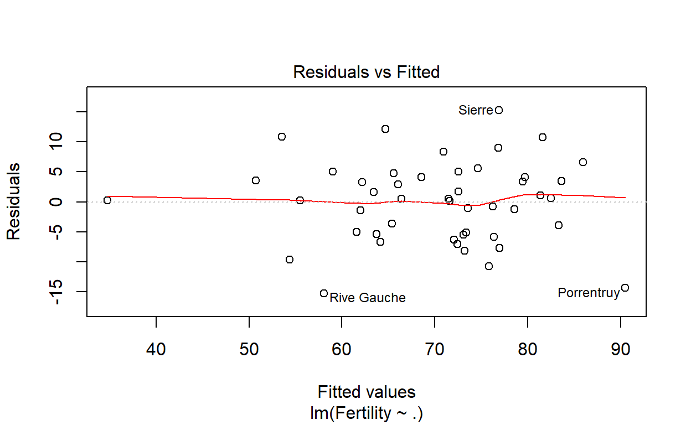
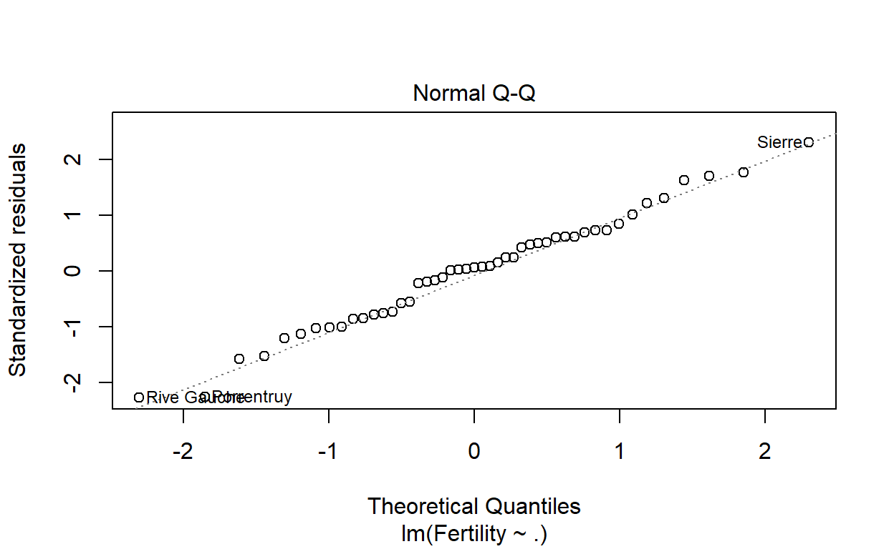
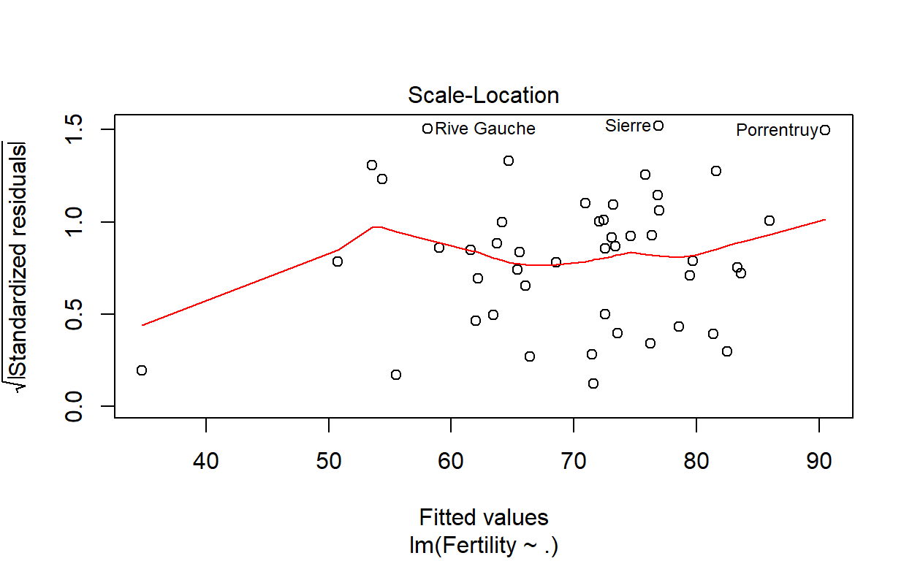

Pregunta 3
Regresion lineal SWISS
Descripcion de datos
\(\textbf{Fertility }\) Ig. medida común de fertilidad estandarizada
\(\textbf{Agriculture }\) % de hombres involucrados en la agricultura como ocupacion
\(\textbf{Examination }\) % de reclutas que reciben la calificacion mas alta en el examen del ejercito
\(\textbf{Education }\) % educacion mas allá de la escuela primaria para reclutas.
\(\textbf{Catholic }\) % ‘catolico’ (a diferencia de ‘protestante’).
\(\textbf{Infant.Mortality }\) nacidos vivos que viven menos de 1 anhio.
data(swiss)
colnames(swiss)
str(swiss)
summary(swiss)hist(swiss$Agriculture , col="#01FF70", main="", xlab="Agriculture", ylab="Frecuencia")
hist(swiss$Examination , col="#01FF70", main="", xlab="Examination", ylab="Frecuencia")
hist(swiss$Education , col="#01FF70", main="", xlab="Education", ylab="Frecuencia")
hist(swiss$Catholic , col="#01FF70", main="", xlab="Catholic", ylab="Frecuencia")
hist(swiss$Infant.Mortality, col="#01FF70", main="", xlab="Mortality", ylab="Frecuencia")
hist(swiss$Fertility , col="#01FF70", main="", xlab="Fertilidad", ylab="Frecuencia")Regresion lineal
lm1 <- lm(formula = Fertility ~ ., data = swiss)
summary(lm1)Lo primera observación es que tenemos un buen modelo y hay varias variables (la mayoría) con una buena significancia. Un punto que no debería suceder pero siempre ocurre es que el intercepto no es 0, esto podría causar que los valores estimados de Fertilidad salgan menores a 0, lo cual en la realidad sería imposible pues no se puede recaudar negativo.
lm1 <- lm(formula = Fertility ~ ., data = swiss)
lm1$coefficientsLo que significan estos coeficientes, por ejemplo el último de la lista Infant.Mortality nos dice que si todas las otros otros regresores se mantuvieran constantes y solamente ese cambiara en una unidad, el Fertility se vería afectado en 1.07705.
Analizado los graficos de la regresion, Valores reales vs valores estimados
lm1 <- lm(formula = Fertility ~ ., data = swiss)
plot(lm1$fitted.values, swiss$Fertility)
abline(0, 1, col = 2)Supuestos
Grafico de los residuos - homocedasticidad
La figura nos permite evaluar la hipotesis de homocedasticidad de los residuos, sera aceptable cuando la anchura horizontal del grafico se mantenga razonablemente constante.
Si el p-value del test de Breusch-Pagan es mayor que 0.05 entonces aceptamos la hipotesis nula (la varianza de todos los grupos son iguales) y decimos que cumple el supuesto de homocedasticidad, caso contrario no se cumple el supuesto de homocedasticidad de varianzas. Podemos ver que se acepta la homocedasticidad.
lm1 <- lm(formula = Fertility ~ ., data = swiss)
ncvTest(lm1)## Non-constant Variance Score Test
## Variance formula: ~ fitted.values
## Chisquare = 0.3077424 Df = 1 p = 0.5790689plot(lm1, which=c(3))
** Efecto de las variables independientes en la variable dependiente es lineal **
par(mfrow=c(1,1))
plot(lm1, which=c(1))
Normalidad de los errores
Los errores residuales son normales y normalmente distribuidos con media cero. Aplicando el test de Shapiro-Wilk se probara si se cumple o no el supuesto de normalidad de los residuos. Con un valor de 0.93 probamos la normalidad de los datos.
shapiro.test(lm1$residuals)##
## Shapiro-Wilk normality test
##
## data: lm1$residuals
## W = 0.98892, p-value = 0.9318par(mfrow=c(1,1))
plot(lm1, which=c(2)) Los errores no estan correlacionados
par(mfrow=c(1,1))
plot(lm1, which=c(3))
Multicolinealidad de los regresores es minima
Buscaremos variables que estén bastante correlacionadas con las demás y que, por ello, no estén aportando más al modelo y que podrían estar distorsionando las predicciones generando overfitting.
car::vif(lm1)## Agriculture Examination Education Catholic
## 2.284129 3.675420 2.774943 1.937160
## Infant.Mortality
## 1.107542chart.Correlation(swiss, histogram=FALSE, pch=19)
Primero atacaremos por la distancia de Cook (Cook’s Distance) para poder encontrar los outliers
lm1 <- lm(formula = Fertility ~ ., data = swiss)
plot(cooks.distance(lm1))Consideramos como límite y n/4, como se puede ver en el gráfico, habrán varios valores que calificarán como outliers y por lo tanto se sacarán para poder estimar un nuevo modelo lineal
lm1 <- lm(formula = Fertility ~ ., data = swiss)
indices.cook <- which(cooks.distance(lm1) >= 4/nrow(swiss))
swiss <-swiss[-indices.cook, ]
lm2 <- lm(formula = Fertility ~ ., data = swiss)
summary(lm2)El principal cambio se encuentre en que el valor de \(R^2\) subio, por lo tanto al momento de graficar valores reales contra los estimados, los puntos deberían estar más pegados a la línea que pasara entre ellos.
Graficamos los Valores reales vs. los Valores estimados
lm1 <- lm(formula = Fertility ~ ., data = swiss)
indices.cook <- which(cooks.distance(lm1) >= 4/nrow(swiss))
swiss <-swiss[-indices.cook, ]
lm2 <- lm(formula = Fertility ~ ., data = swiss)
plot(lm2$fitted.values, swiss$Fertility)
abline(0, 1, col = 2)Se pueden apreciar ahora los puntos mas cercanos a la linea roja. Por otra parte,
Graficamos los Residuales vs. los Valores estimados
lm1 <- lm(formula = Fertility ~ ., data = swiss)
indices.cook <- which(cooks.distance(lm1) >= 4/nrow(swiss))
swiss <-swiss[-indices.cook, ]
lm2 <- lm(formula = Fertility ~ ., data = swiss)
plot(lm2$fitted.values, lm2$residuals)
abline(0, 0, col = 2)Para descartar que estemos utilizando muchos regresores, los cuales no me estén brindando más información de la que ya me están brindando los otros. Para arreglar esto utilizaremos el Akaike Information Criterion (AIC) con un stepwise en ambas direcciones
lm1 <- lm(formula = Fertility ~ ., data = swiss)
indices.cook <- which(cooks.distance(lm1) >= 4/nrow(swiss))
swiss <-swiss[-indices.cook, ]
lm2 <- lm(formula = Fertility ~ ., data = swiss)
step<-stepAIC(lm2, direction = "both")
summary(step)Seguimos la recomendación y hacemos un modelo sin la variable Education. El resultado no debería mejorar sustancialmente, en general debería quedarse igual y solamente se habrían eliminado variables que no aportaban al modelo.
lm1 <- lm(formula = Fertility ~ ., data = swiss)
indices.cook <- which(cooks.distance(lm1) >= 4/nrow(swiss))
swiss <-swiss[-indices.cook, ]
swiss <- swiss[ , !colnames(swiss) %in% c("Education")]
lm3 <- lm(formula = Fertility ~ ., data = swiss)
summary(lm3)Para comprobar que este cambio no ha sido significativo hacemos la tabla de ANOVA entre el modelo anterior y este último modelo.
lm1 <- lm(formula = Fertility ~ ., data = swiss)
indices.cook <- which(cooks.distance(lm1) >= 4/nrow(swiss))
swiss <- swiss[-indices.cook, ]
lm2 <- lm(formula = Fertility ~ ., data = swiss)
swiss <- swiss[ , !colnames(swiss) %in% c("Education")]
lm3 <- lm(formula = Fertility ~ ., data = swiss)
anova(lm2, lm3)